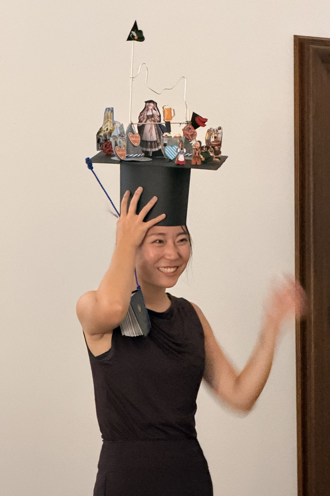

Dr.-Ing. · Technical University of Munich
Chujun Zong
Dynamic life cycle assessment and sustainable building design

Research profile
I am a doctoral researcher, Dr.-Ing., at the Technical University of Munich, at the Chair of Energy Efficient and Sustainable Design and Building. My research develops dynamic life cycle assessment methodology for the built environment, moving assessment from a static and retrospective audit toward an instrument that informs design while it is being drawn.
Research interests
Experience
- 2022 · 2026 Research Associate and Doctoral Candidate Chair of Energy Efficient and Sustainable Design and Building, Technical University of Munich Led two publicly funded research projects, supervised master's theses, and taught in both English and German curricula. Chair of Professor Werner Lang, Vice President for Sustainable Transformation.
- 2020 · 2021 Working Student, Construction, Design and Sustainability Siemens Energy AG
Education
- 2022 · 2026 Dr.-Ing. Technical University of Munich, Chair of Energy Efficient and Sustainable Design and Building Supervisor: Professor Werner Lang. Passed magna cum laude.
- 2019 · 2021 M.Sc. Resource Efficient and Sustainable Building Technical University of Munich
- 2014 · 2019 B.A. Architecture Technical University of Munich
- 2016 · 2017 Exchange year, B.A. Architecture École Polytechnique Fédérale de Lausanne
Teaching
| System Effects and Interdependencies of Sustainable Planning in Civil Engineering | Teaching assistant · English | 2025 · 2026 |
| Introduction to Scientific Writing | Lecturer · English | 2023 · 2026 |
| Sustainable Building and Ecological Building, basic modules | Teaching assistant · German | 2022 · 2026 |
| Sustainable Lighting Technology | Lecturer · English | 2022 · 2025 |
Publications
- 01 Graph-based Database Structure and Calculation Framework for Automated Dynamic Life Cycle Assessment of Buildings Zong, C.; Banihashemi, F.; Petzold, F.; Lang, W. Automation in Construction, 2026.AcceptedQ1
- 02 Evaluation of Building Design Variants in Early Phases on the Basis of Adaptive Detailing Strategies Napps, D.; Staudt, J.; Saluz, U.; Chen, X.; Steiner, D.; Zong, C.; Deghim, F.; Lang, W.; Geyer, P.; Schnellenbach-Held, M.; Petzold, F.; Borrmann, A.; König, M. Buildings, 16(4), 685, 2026. 10.3390/buildings16040685
- 03 Dynamic Life Cycle Impact Assessment (DLCIA) in a Sustainable Building Planning Process Zong, C.; Banihashemi, F.; Lang, W. Scientific Reports, 15, 32680, 2025. 10.1038/s41598-025-20599-1Q1
- 04 Dynamic Factors in Life Cycle Assessment: Systematic Review and Categorization Zong, C.; Lang, W. Building Simulation Conference 2025, 19th IBPSA Conference. 10.26868/25222708.2025.1450
- 05 Assessing Pedestrian Level Barriers Using Mobile Robot to Validate 15-Minute City Concept Zong, C.; Lang, W.; Pancheri, F.; Sun, Y. Building Simulation Conference 2025, 19th IBPSA Conference. 10.26868/25222708.2025.1448
- 06 A RAG-Based Framework for Material Matching in LCA: Integrating Semantic and Character Similarity with AI-Driven Explanations Chen, H.; Benfer, R.; Zong, C.; Reitberger, R.; Präger, L.; Lang, W. Building Simulation Conference 2025, 19th IBPSA Conference. 10.26868/25222708.2025.1449
- 07 Comparing Refurbishment Strategies for Buildings at a City District Level Using Life Cycle Analysis Ehlers, N.; Zong, C.; Meier-Dotzler, C.; Lang, W. Journal of Physics: Conference Series, 3140, CISBAT 2025, Lausanne. 10.1088/1742-6596/3140/13/132010
- 08 Life Cycle Assessment of Urban Spaces: A Case Study on a District Scale Quiroz, J.V.; Ehlers, N.; Zong, C.; Lang, W. IOP Conference Series: Earth and Environmental Science, 1615, SBE 2025, Trondheim. 10.1088/1755-1315/1615/1/012076Supervised
- 09 Concept Paper for a Python Tool to Estimate Recycle and Reuse Potential of Building Materials Kobrousli, M.; Zong, C.; Ehlers, N.; Lang, W. IOP Conference Series: Earth and Environmental Science, SBE 2025, Zurich.Supervised
- 10 A Holistic Two-Stage Decision-Making Methodology for Passive and Active Building Design Strategies under Uncertainty Zong, C.; Chen, X.; Deghim, F.; Staudt, J.; Geyer, P.; Lang, W. Building and Environment, 251, 111211, 2024. 10.1016/j.buildenv.2024.111211Q1
- 11 Occupancy Modeling on Non-Intrusive Indoor Environmental Data through Machine Learning Banihashemi, F.; Weber, M.; Deghim, F.; Zong, C.; Lang, W. Building and Environment, 254, 111382, 2024. 10.1016/j.buildenv.2024.111382Q1
- 12 System Dynamics Modeling of Life Cycle Carbon Footprints for Building Wall Insulation Materials Zong, C.; Sun, Y.; Lang, W. IOP Conference Series: Earth and Environmental Science, 1363, WSBE 2024. 10.1088/1755-1315/1363/1/012066
- 13 Gebäudetypen für Nicht-Wohngebäude zur vereinfachten Durchführung von Lebenszyklusanalysen auf Stadtquartiersebene Beltinger, A.; Ehlers, N.; Zong, C.; Lang, W. BauSim 2024, 10th Conference of IBPSA Germany and Austria. 10.26868/29761662.2024.39Supervised
- 14 Design of Topology Optimized Compliant Legs for Bio-Inspired Quadruped Robots Sun, Y.; Zong, C.; Pancheri, F.; Chen, T.; Lueth, T.C. Scientific Reports, 13, 4875, 2023. 10.1038/s41598-023-32106-5Q1
- 15 A Comparative Study of Dynamic Building Simulation and Machine-Learning within a Two-Stage Multi-Objective Stochastic Optimization Framework Zong, C.; Reitberger, R.; Deghim, F.; Staudt, J.; Larkin, J.A.; Lang, W. 18th IBPSA Conference on Building Simulation, 1540 to 1547, 2023. 10.26868/25222708.2023.1369
- 16 A Holistic Analysis of Sustainability Metrics at an Urban District Scale Ehlers, N.; Schulze, K.; Zong, C.; Vollmer, M.; Schroeter, S.; Lang, W. IOP Conference Series: Earth and Environmental Science, 1196, SBE23, Thessaloniki. 10.1088/1755-1315/1196/1/012071
- 17 Decision-Making under Uncertainty in the Early Phase of Building Façade Design Based on Multi-Objective Stochastic Optimization Zong, C.; Margesin, M.; Staudt, J.; Deghim, F.; Lang, W. Building and Environment, 226, 109729, 2022. 10.1016/j.buildenv.2022.109729Q1
- 18 Implementation of Occupant Behaviour Models for Window Control Using Co-Simulation Approach Zong, C.; Banihashemi, F.; Vollmer, M.; Lang, W. BauSIM 2022. 10.26868/29761662.2022.85
- 19 Life Cycle Potentials and Improvement Opportunities as Guidance for Early-Stage Design Decisions Staudt, J.; Margesin, M.; Zong, C.; Deghim, F.; Lang, W.; Zahedi, A.; Petzold, F.; Schneider-Marin, P. ECPPM 2022, 14th European Conference on Product and Process Modelling. 10.1201/9781003354222-5
- 20 Structure and LCA-Driven Building Design Support in Early Phases Using Knowledge-Based Methods and Domain Knowledge Steiner, D.; Schnellenbach-Held, M.; Staudt, J.; Margesin, M.; Zong, C.; Lang, W. ECPPM 2022, 14th European Conference on Product and Process Modelling. 10.1201/9781003354222-6
No entries of this type in this year.
GraphDLCA
A graph database structure and calculation framework for automated dynamic life cycle assessment of buildings.
GraphDLCA reorganises the building inventory as a property graph rather than a spreadsheet. Components, materials, replacement events and impact factors become nodes. The relationships between them, in composition and in time, become edges that can be traversed.
Because time is modelled inside the graph instead of being added to a static calculation afterwards, a dynamic assessment becomes a query rather than a manual rebuild.
- Automated dynamic assessment. Replacement cycles and impact factors that change over time are resolved by traversing the graph.
- Reusable inventories. Component data is entered once and queried again across scenarios and projects.
- Scenario comparison. Design variants are evaluated without entering the inventory again.
- Interactive interface. Results can be explored by readers who are not specialists in life cycle assessment.
Published as: Zong, C.; Banihashemi, F.; Petzold, F.; Lang, W. Graph-based Database Structure and Calculation Framework for Automated Dynamic Life Cycle Assessment of Buildings, Automation in Construction, 2026.
Honors and awards
- Doce et Delecta Teaching Award, First Place. Faculty of Civil and Environmental Engineering, Technical University of Munich, winter semester 2022 and 2023, for Sustainable Lighting Technology.
- National Award for Outstanding Self-funded Students Abroad, Category A, 2024. China's highest honour for doctoral researchers studying overseas.
- Registered Professional, German Sustainable Building Council.
Profiles and contact
Open to research collaborations, faculty positions, and industry projects in sustainable building and life cycle assessment.